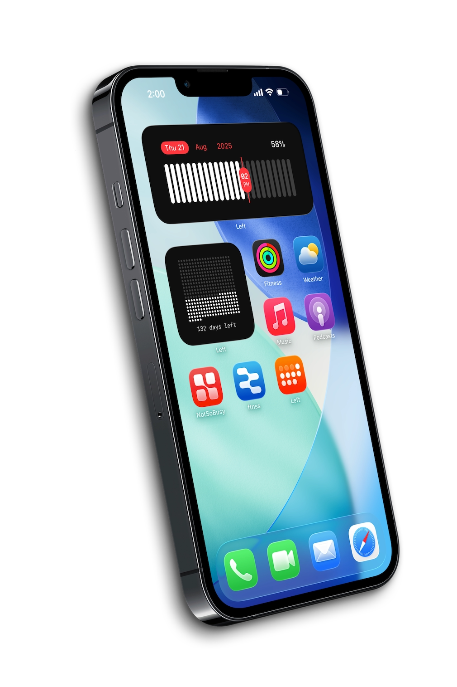
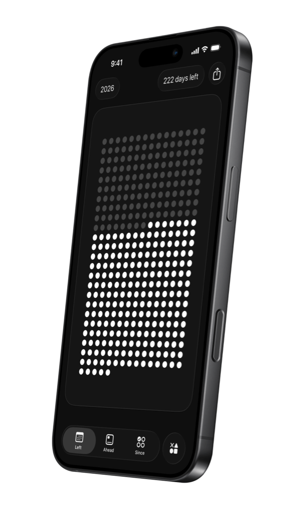
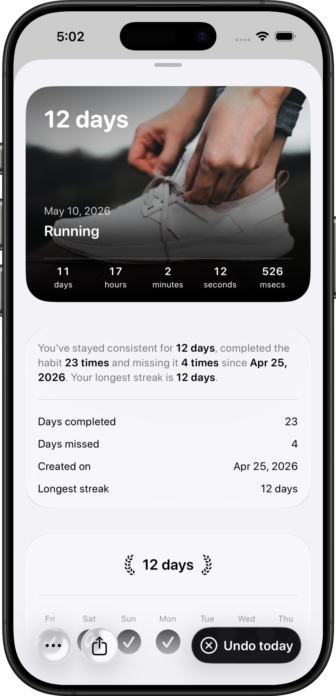

Time Left
How much time do you actually have?
Left Time shows the time remaining in your life, year, month, week, day, and hour. Every view is a widget. Every widget is a reminder that the time is real.

Habits, countdowns, and the time that's actually left — in beautiful widgets on your Home Screen, Lock Screen, and StandBy.

Left turns time into a simple loop: notice what matters, plan the next move, and keep going.
Make your year, month, week, day, and life visible before it slips into the background.
Left brings time left, countdowns, habits, streaks, and your daily plan into widgets that stay visible.
Left Time shows the time remaining in your life, year, month, week, day, and hour. Every view is a widget. Every widget is a reminder that the time is real.
Add any date — a trip, a birthday, a deadline, a wedding. Ahead turns it into a beautiful countdown widget on your Home Screen. Invite friends to count down together.

Since tracks how long you've kept something going — and how consistently you're doing it. Daily habits, weekly goals, or any custom schedule. Your progress lives on your Home Screen.

The Planner combines your habits, countdowns, calendar events, reminders, health summaries, and weather into a single scrollable timeline. One view for what's ahead.

Small utilities, shared moments, and widget details that make the app useful every day.
You have this year. This month. These next few weeks. Most people don't track the time they have — only the time they've lost. Left is built on a different idea: what you track, you keep.
Start from real examples across habits, streaks, and meaningful dates, pulled directly from the template library.
Notes from people using Left to keep habits, countdowns, and time visible on their screens.
For days that are lived outside the app: trips, runs, mornings, breaks, and plans worth keeping.


The basics on pricing, widgets, sharing, sync, and what Left does with your data.
Habits, countdowns, and the time that's actually left — in beautiful widgets on your Home Screen, Lock Screen, and StandBy.